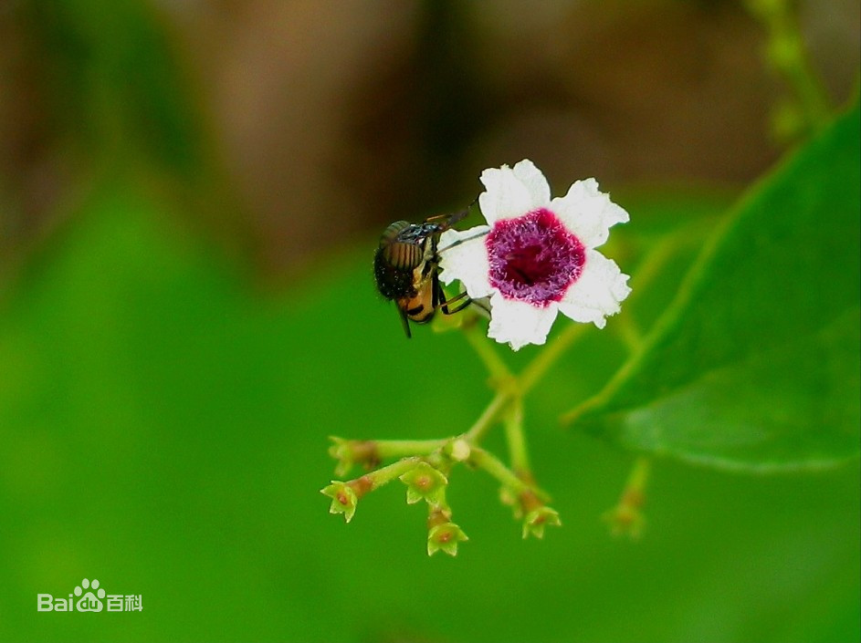

鸡屎藤能预防新冠病毒，是真的吗？
了解详情

苦木注射液是否对新冠肺炎的治疗有效？
了解详情
新冠肺炎会像艾滋、乙肝一样，不可能被彻底消灭，长期寄生体内？
了解详情
鸡屎藤又名鸡矢藤，是一种常见的中药药材，因为这种植物有类似鸡屎的臭味而得名。在传统医学典籍中，鸡屎藤的功能被描述为祛风活血、止痛解毒、消食导滞、除湿消肿。但目前并无实验明确证实这些功效。
目前也没有任何已公开的实验证据证实鸡屎藤对包含新冠病毒在内的冠状病毒有抑制作用。因此，认为鸡屎藤能预防新冠肺炎毫无依据。而且《有毒中草药彩色图鉴》认为，鸡屎藤的全草是有毒性的。大家千万不要勿信谣言自行服用。
安宫牛黄丸不能预防新冠肺炎，该药属于急救药品，用于热闭证。该药不是《新型冠状病毒肺炎诊疗方案（试行第六版）》推荐的治疗新冠肺炎的药物，切记不可滥用。
该药清热解毒，镇惊开窍。用于热病，邪入心包，高热惊厥，神昏谵语；中风昏迷及脑炎、脑膜炎、中毒性脑病、脑出血、败血症见上述证候者。
苦木注射液属于中成药，有清热解毒消炎的功效，对治疗新冠肺炎是没有作用的。这种药物主要是适用于感冒，上呼吸道感染，急性扁桃腺炎的治疗。
目前没有针对新冠病毒的药物，主要是隔离治疗，对症支持治疗为主。建议不要乱用药物，避免影响身体的健康，还起不到治疗的作用。
目前没有任何证据表明，新型冠状病毒会长时间在身体里面潜伏，从理论上来说，这种可能性是非常非常小的。
3 月 14 日，中国医学科学院医学实验动物研究所、北京协和医学院、首都医科大学附属北京安贞医院的研究团队在预印本平台 bioRxiv 在线发表了他们的最新研究，题目为：Reinfection could not occur in SARS-CoV-2 infected rhesus macaques，翻译成中文为恒河猴感染新冠病毒，康复之后，不会再次感染。

 分享到
分享到